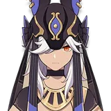
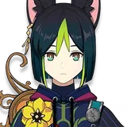
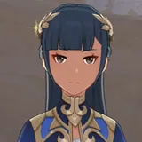
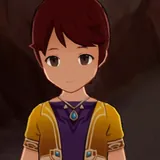
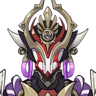

Chương III · Màn V
Akasha Rung Động, Kiếp Hỏa Dâng Trào
Nhiệm vụ Ma Thần — Sumeru
Nhân vật xuất hiện
 Nhân vật chính · Nhà Lữ HànhLumineNhà Lữ Hành đến từ thế giới khác. Bị vị thần lạ mặt phong ấn và cướp mất người anh song sinh, cô bắt đầu hành trình đi tìm Bảy Vị Thần của Teyvat.
Nhân vật chính · Nhà Lữ HànhLumineNhà Lữ Hành đến từ thế giới khác. Bị vị thần lạ mặt phong ấn và cướp mất người anh song sinh, cô bắt đầu hành trình đi tìm Bảy Vị Thần của Teyvat. Bạn đồng hànhPaimonĐược Lumine cứu khỏi chết đuối hai tháng trước, Paimon tự nhận làm người dẫn đường cho cô. Hay ăn, hay nói, và rất ghét bị gọi là “thực phẩm dự trữ”.
Bạn đồng hànhPaimonĐược Lumine cứu khỏi chết đuối hai tháng trước, Paimon tự nhận làm người dẫn đường cho cô. Hay ăn, hay nói, và rất ghét bị gọi là “thực phẩm dự trữ”.- Tiểu Vương Kusanali · Thảo ThầnNahidaSau khi được giải thoát khỏi Thánh Địa Surasthana, cô cùng Lumine vượt 168 vòng mộng cảnh đánh bại Shouki no Kami và thực hiện di nguyện thanh tẩy Cây Thế Giới.
 Quan Thư Ký Giáo ViệnAlhaithamLên kế hoạch tráo Hũ Tri Thức giả đánh lừa Đại Hiền Giả Azar và tạm thời xử lý công vụ Giáo Viện hậu biến cố.
Quan Thư Ký Giáo ViệnAlhaithamLên kế hoạch tráo Hũ Tri Thức giả đánh lừa Đại Hiền Giả Azar và tạm thời xử lý công vụ Giáo Viện hậu biến cố.
Tổng Quản MahamatraCynoTrực tiếp đột kích bắt giữ Azar tại Thánh Địa Surasthana và chính thức phục chức. “Sư Tử Lửa” · EremiteDehyaĐiều tra tung tích Dottore tại Cảng Ormos và dẫn đội Eremite giải cứu nhóm Lumine.
“Sư Tử Lửa” · EremiteDehyaĐiều tra tung tích Dottore tại Cảng Ormos và dẫn đội Eremite giải cứu nhóm Lumine.
Đội Trưởng Kiểm Lâm Rừng AvidyaTighnariBảo vệ Haypasia tại Pardis Dhyai và chăm sóc Lumine phục hồi ở Làng Gandharva. Kiểm lâm tập sựColleiBình phục hoàn toàn khỏi bệnh Eleazar sau khi Cây Thế Giới được thanh tẩy.
Kiểm lâm tập sựColleiBình phục hoàn toàn khỏi bệnh Eleazar sau khi Cây Thế Giới được thanh tẩy.- Vũ công Nhà Hát ZubayrNilouMúa trước cổng Giáo Viện để kích hoạt lệnh cấm giả, mở màn kế hoạch giải cứu Thảo Thần và chủ trì tiệc mừng chiến thắng.
- Tiểu thư nhà HomayaniDunyarzadKhỏi hẳn bệnh Eleazar và tham dự lễ hội mừng chiến thắng tại Đại Khu Bazaar.
- Hộ vệ Làng AaruCandaceHỗ trợ giữ hậu phương và hỏi thăm người dân Làng Aaru sau biến cố.
- RThủ lĩnh EremiteRahmanPhối hợp nhóm Eremite hành động theo kế hoạch của Alhaitham và tiếp tục ở lại hỗ trợ Làng Aaru.

Cựu trợ lý Đại Hiền GiảSetariaSau biến cố, cô cùng Cyno và Rahman ở lại sa mạc hỗ trợ đời sống dân chúng.
Cậu bé Làng AaruIsakCải trang làm Tiểu Vương Kusanali để đánh lạc hướng vệ binh Giáo Viện.- Đại Hiền Giả Giáo ViệnAzarChủ mưu kế hoạch tạo thần nhân tạo và giam cầm Nahida; cuối cùng bị cách chức và đày về Rừng Avidya sám hối.
- Quan Chấp Hành Fatui thứ haiDottoreKẻ đứng sau thí nghiệm tạo thần; giao dịch hai viên Gnosis với Nahida bằng việc xóa bỏ các phân mảnh của chính mình và hé lộ bầu trời Teyvat là giả.

Quan Chấp Hành Fatui · “Vị Thần Bất Diệt”Scaramouche · Shouki no KamiHóa thân thành “Vị Thần Bất Diệt Của Trí Tuệ Ẩn Mật” trong công xưởng ngầm, thất bại trước Lumine và mất Gnosis Lôi.- ĐTừ Thọ Vương Tiền Nhiệm (ý thức)Đại Vương RukkhadevataGửi lại di nguyện “Hãy để thế giới lãng quên ta hoàn toàn” giúp Nahida thanh tẩy tận gốc tri thức cấm kỵ khỏi Cây Thế Giới.
- Kiến trúc sư Học Phái KshahrewarKavehVừa trở về từ công trình sa mạc và khắc khẩu cùng Alhaitham tại Cung Điện Daena.
- VĐồng minh ở Đại Khu Bazaar & Pardis DhyaiVihar · Sheikh Zubayr · HaypasiaHỗ trợ thực hiện kế hoạch giải cứu và hồi phục sau sự kiện.
Các phần
- Phần 1Đêm Tối Trước Bình Minh
- Phần 2Như Bên Cạnh Thần
- Phần 3Ngày Jnagarbha
- Phần 4Đích Đến Của Con Thuyền Ý Thức
- Phần 5Mời Uống Ly Rượu Mừng Chiến Thắng
Toàn bộ lời thoại được lấy từ bản tiếng Việt chính thức của trò chơi. Ở những đoạn người chơi được chọn câu trả lời, truyện chọn một lựa chọn duy nhất.